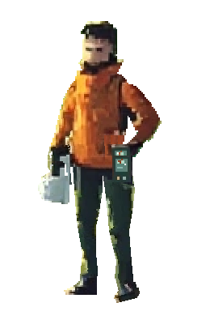

七姿态 · 离散节奏预览
一次负重换步，用于检查脚底、重心和装备随身关系。
01 · 右脚承重
已暂停 · 静帧审片

右脚承重
1 / 7
逐帧查看
播放
上一帧
下一帧
速度
0.75×
1×
1.25×
帧位
01
右承重
02
左腿经过
03
左脚前摆
04
左脚跟下落
05
低位接触
06
右腿经过
07
左承重
播放到第 7 帧会停下，不循环，不倒播，不补绘中间帧。
如果接触段读成“突然滑步”，应回到整帧重排，而不是用速度或插值掩盖。